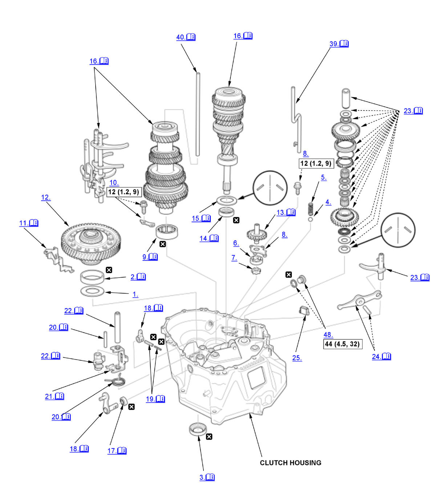
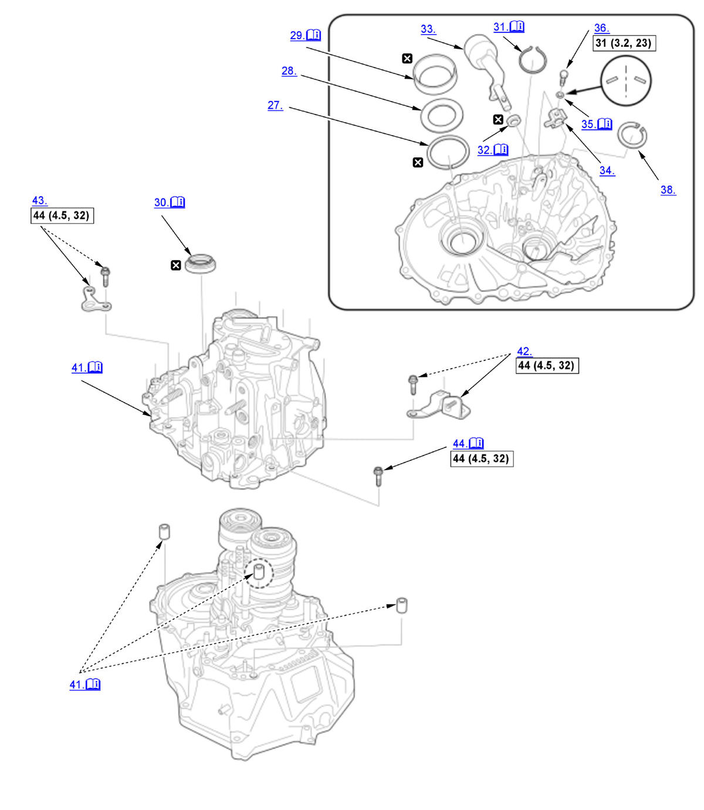
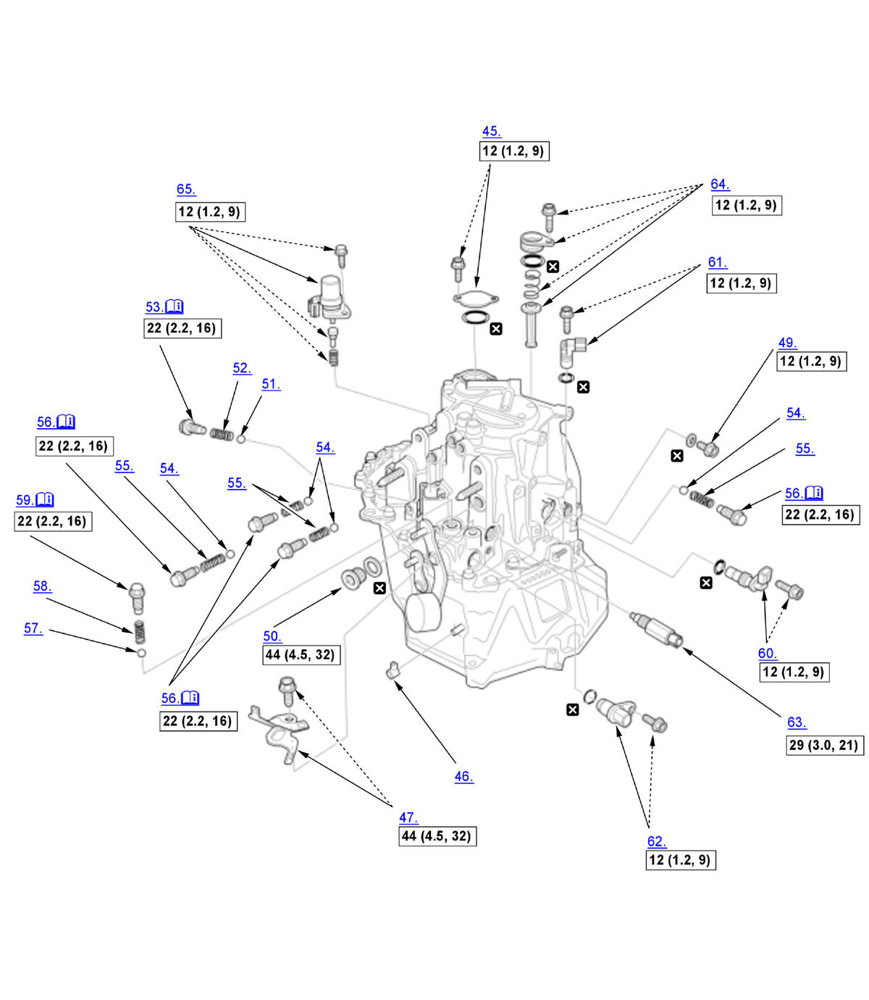

Manual Transmission Disassembly and Reassembly (K20C1 (M/T)) (2017 2018 2019 2020 2021): Reassembly: Procedure
Numbered call-outs in figure pertain to list numbers in following procedure.

Courtesy of HONDA, U.S.A., INC. |
Detailed information, notes, and precautions |
 |
Torque: N.m (kgf.m, lbf.ft) |
 |
Replace |
Numbered call-outs in figure pertain to list numbers in following procedure.

Courtesy of HONDA, U.S.A., INC. |
Detailed information, notes, and precautions |
|
Torque: N.m (kgf.m, lbf.ft) |
|
Replace |
Numbered call-outs in figure pertain to list numbers in following procedure.

Courtesy of HONDA, U.S.A., INC. |
Detailed information, notes, and precautions |
|
Torque: N.m (kgf.m, lbf.ft) |
|
Replace |
- 46 x 80 x 1 mm Spacer - Install
- 45 x 80 x 21 mm Bearing Outer Race - Install (Clutch Housing Side)
1. Install the 45 x 80 x 21 mm bearing outer race using the 15 x 135L driver handle and the 78 x 80 mm bearing driver attachment. - 37 x 56 x 8 mm Oil Seal - Install (Clutch Housing Side)
1. Install the 37 x 56 x 8 mm oil seal flush with the clutch housing using the 15 x 135L driver handle and the oil seal driver attachment. - Steel Ball - Install
- 16.1 mm Detent Ball Spring - Install
- Oil Pump Outer Rotor - Install
- Oil Pump Inner Rotor - Install
- Oil Pump Plate - Install
- Countershaft Bearing - Install (Clutch Housing Side)
1. Install the countershaft bearing using the 15 x 135L driver handle and the 72 x 75 mm bearing driver attachment. - Bearing Set Plate - Install
- Oil Gutter Plate - Install
1. Install the oil gutter plate (A) press-fit to the clutch housing surface (B). - Differential Assembly - Install
- Oil Pump Shaft - Install
1. Install the oil pump shaft (A) while aligning the notch cut (B) of the oil pump shaft with the notch cut of the oil pump inner rotor (C) as shown. - 28 x 43 x 7 mm Oil Seal - Install
1. Install the 28 x 43 x 7 mm oil seal (A) flush with the clutch housing (B) as shown using the 15 x 135L driver handle and the 52 x 55 mm bearing driver attachment. - Spring Washer - Install
NOTE: Be sure to install the spring washer in the direction shown.
- Mainshaft, Countershaft, and Shift Fork Assembly - Install
1. Apply a thin layer of tape to the mainshaft splines to protect the oil seal. NOTE: Do not apply too much tape as it will damage the oil seal.
2. Install the mainshaft (A) and the countershaft (B) with the shift fork assembly (C) as an assembly.
- 14 x 20 x 4 mm Dust Seal - Install
1. Install the 14 x 20 x 4 mm dust seal flush with the clutch housing surface using the 15 x 135L driver handle and the 24 x 26 mm bearing driver attachment. - Select Lever and Select Arm - Install
1. Install the select lever (A) and the select arm (B) as shown. - 5 x 22 mm Spring Pin and 3 x 22 mm Spring Pin - Install
1. Install the 5 x 22 mm spring pin (A) and the 3 x 22 mm spring pin (B) together as shown.
NOTE: Make sure the seams (C) of the 5 x 22 mm and the 3 x 22 mm spring pin are opposite side. - Return Spring and 8 x 50 mm Pin - Install
1. Install the select return spring (A) and the 8 x 50 mm pin (B) as shown. - Interlock - Install
1. Install the interlock (A).
NOTE: Align the interlock with the select arm (B), the select return spring (C), and the shift fork assembly (D). - Shift Piece and Shift Piece Shaft - Install
1. Install the shift piece (A) and the shift piece shaft (B).
NOTE: Align the shift piece with the shift fork assembly (C). - Reverse Idler Gear Shaft Assembly and Reverse Shift Fork - Install
1. Install these parts in the following order: - Reverse drive gear (A)
- Reverse idler gear shaft (B)
- Needle bearing (C)
- Thrust needle bearing (D)
- Thrust washer (E)
- Thrust needle bearing (F)
- Needle bearing (G)
2. Install the reverse synchro sleeve (A) in the direction shown by aligning the slots of the reverse synchro sleeve and the reverse driven gear (B).
NOTE: Make sure to align the slots in the reverse driven gear as shown.3. Set the synchro spring (A) to the synchro ring (B) and install to the reverse driven gear (C) as shown. 4. Install the reverse driven gear set (A) in the reverse driven gear set (B). 5. Assemble the thrust needle bearings (A), the thrust washers (B), the spring washer (C), the reverse idler gear shaft assembly (D), and the reverse shift fork (E).
NOTE: Be sure to install the spring washer in the direction shown.6. Slide the reverse idler gear shaft assembly (A) on the rib (B) of the clutch housing, then install it into the hole (C) of the clutch housing. - Reverse Shift Lever and 8 x 50 mm Pin - Install
1. While aligning the opening (A) with the reverse shift fork (B), install the reverse shift lever (C) and secure it with the 8 x 50 mm pin (D). - Magnet - Install
- 81 mm Shim - Select
- 81 mm Shim - Install
- 46 x 81 x 1 mm Spacer - Install
- 50 x 81 x 18 mm Bearing Outer Race - Install (Transmission Housing Side)
1. Install the 50 x 81 x 18 mm bearing outer race using the 15 x 135L driver handle and the 78 x 80 mm bearing driver attachment. - 42 x 58 x 12.5 mm Oil Seal - Install (Transmission Housing Side)
1. Install the 42 x 58 x 12.5 mm oil seal flush with the transmission housing using the 15 x 135L driver handle and the 60 mm oil seal driver attachment. - 75 mm Snap Ring - Install
NOTE: Make sure the snap ring is firmly installed in the groove.
- 16 x 23 x 5 mm Dust Seal - Install
1. Install the 16 x 23 x 5 mm dust seal flush with the transmission housing surface using the 15 x 135L driver handle and the 24 x 26 mm bearing driver attachment. - Change Lever - Install
- Shift Arm - Install
- Spring Washer - Install
NOTE: Be sure to install the spring washer in the direction shown.
- 8 mm Special Bolt - Install
- 87 mm Shim - Select
- 87 mm Shim - Install
- Oil Guide Pipe B - Install
1. Install oil guide pipe B while aligning the tip (A) with the hole (C) in the clutch housing. - Oil Guide Pipe A - Install
NOTE: Install oil guide pipe A into the countershaft until it bottom of the clutch housing.
- Transmission Housing - Install
1. Clean any dirt and oil from the sealing surface of the transmission housing and the clutch housing. 2. Apply liquid gasket (P/N 08718-0003, 08718-0004, or 08718-0009) evenly to the clutch housing mating surface of the transmission housing. Install the component within 5 minutes of applying the liquid gasket.
NOTE:
- If too much time has passed after applying the liquid gasket, remove the old liquid gasket and residue, then reapply new liquid gasket.
- Wait at least 30 minutes before filling MTF.
3. Install the 14 x 20 mm dowel pins (A). 4. Lower the transmission housing, then place the shift arm (B) in the groove of the shift piece (C) by turning the change lever (D).
5. While expanding the 75 mm snap ring (E) on the countershaft ball bearing using the snap ring pliers, push the transmission housing down to start the countershaft ball bearing through the snap ring. Release the pliers, and push down the housing unit it bottoms out and the snap ring snaps in place in the countershaft ball bearing snap ring groove.
6. Make sure the 75 mm snap ring is securely seated in the groove of the countershaft bearing.
Dimension (1) as installed:
7. Check the operation of the change lever and the select lever.
1.67-9.42 mm (0.0657-0.3709 in) - Clutch Pipe Bracket - Loosely Install
- Transmission Hanger B - Loosely Install
- 10 mm Flange Bolt - Tighten
NOTE: Install the 10 mm flange bolts with transmission hanger B and the clutch pipe bracket in a crisscross pattern in several steps.
- Transmission Case Cap - Install
- Breather Cap - Install
- Transmission Hanger D - Install
- Drain Plug - Install
- Oil Check Bolt - Install
- Filler Plug Bolt - Install
- Steel Ball - Install
- 27.4 mm Detent Ball Spring - Install
- Detent Bolt - Install
1. Clean any dirt and oil from the sealing surface of the detent bolt and the transmission housing. 2. Apply liquid gasket (P/N 08718-0003, 08718-0004, or 08718-0009) to the thread of the detent bolt. Install the component within 5 minutes of applying the liquid gasket.
NOTE:
- If too much time has passed after applying the liquid gasket, remove the old liquid gasket and residue, then reapply new liquid gasket.
- Wait at least 30 minutes before filling MTF.
- Steel Ball - Install
- 26.0 mm Detent Ball Spring - Install
- Detent Bolt - Install
1. Clean any dirt and oil from the sealing surface of the detent bolts and the transmission housing. 2. Apply liquid gasket (P/N 08718-0003, 08718-0004, or 08718-0009) to the thread of the detent bolts. Install the component within 5 minutes of applying the liquid gasket.
NOTE:
- If too much time has passed after applying the liquid gasket, remove the old liquid gasket and residue, then reapply new liquid gasket.
- Wait at least 30 minutes before filling MTF.
- Steel Ball - Install
- 23.6 mm Detent Ball Spring - Install
- Detent Bolt - Install
1. Clean any dirt and oil from the sealing surface of the detent bolt and the transmission housing. 2. Apply liquid gasket (P/N 08718-0003, 08718-0004, or 08718-0009) to the thread of the detent bolt. Install the component within 5 minutes of applying the liquid gasket.
NOTE:
- If too much time has passed after applying the liquid gasket, remove the old liquid gasket and residue, then reapply new liquid gasket.
- Wait at least 30 minutes before filling MTF.
- Output Shaft (Countershaft) Speed Sensor - Install
- Input Shaft (Mainshaft) Speed Sensor - Install
- Neutral Position Sensor - Install
- Back-Up Light Switch - Install
- Oil Pump Strainer - Install
- Reverse Lockout Solenoid - Install
- Release Bearing - Install